7.2.1 子宫内膜疾病
1. 子宫内膜增生（EH）
(1) 临床概述：
子宫内膜增生（EH）是一种非生理性、非侵袭性的子宫内膜过度生长。其特征是
• 腺体结构改变
• 腺体与间质比例改变 [26]
世界卫生组织于2014年将子宫内膜增生分为两类[7]：
(a) 无异型增生的子宫内膜增生：被认为是一种良性病变，癌症风险低于5%[8]
(b) 伴有异型增生的子宫内膜增生：
一种可能进展为子宫内膜癌的癌前病变
(2) 临床表现：
子宫内膜异位症最常见的症状是异常子宫出血，表现为
• 月经周期紊乱。
• 月经不规则或持续时间过长。
• 月经量增多或月经过多。
注意：月经出血期间通常没有腹痛或不适感。
(3) 超声特征：
(a) 子宫内膜均匀增厚：
绝经前厚度 $\geq$12 mm。
绝经后厚度 $\geq$4 mm。
增厚的子宫内膜与子宫肌层界限清晰。
(b) 回声：
• 它可能是均质的，或
• 可能呈蜂窝状，伴有散在的小液性区域
- 也可能表现为异质性
(c) 多普勒超声：
- 彩色和频谱多普勒超声可以在增厚的子宫内膜内检测到点状血流信号。
• 也可见高阻力动脉血流（见图 7.22）。
(4)鉴别诊断：
有关鉴别诊断的列表，请参阅表 7.4。
7.2.1 Endometrial Diseases
1. Endometrial hyperplasia (EH)
(1) Clinical overview:
Endometrial hyperplasia (EH) is a nonphysiological, noninvasive overgrowth of the endometrium. It is characterized by
• Alterations in glandular structure
• Changes in the ratio of glands to interstitium [26]
In 2014, the WHO classified EH into two categories [7]:
(a) Endometrial Hyperplasia without Atypical Hyperplasia: Considered a benign condition with a cancer risk of less than 5% [8]
(b) Endometrial Hyperplasia with Atypical Hyperplasia:
A precancerous condition that may progress to endometrial cancer
(2) Clinical manifestations:
The most common symptom of EH is abnormal uterine bleeding, which can present as
• Disturbed menstrual cycles.
• Irregular or prolonged menstrual periods.
• Increased or heavy menstrual flow.
Note: Abdominal pain or discomfort is usually absent during menstrual bleeding.
(3) Ultrasonographic features:
(a) Evenly thickened endometrium:
Thickness $ \geq $12 mm before menopause.
Thickness $ \geq $4 mm after menopause.
The thickened endometrium is well-demarcated from the myometrium.
(b) Echogenicity:
• It may be homogeneous, or
• May present a honeycomb-like pattern with scattered small fluid areas
- Can also appear heterogeneous
(c) Doppler Ultrasound:
- Color and spectral Doppler ultrasound can detect dot-like blood flow signals within the thickened endometrium.
• High resistance arterial flow may also be seen (see Fig. 7.22).
(4) Differential diagnosis:
For a list of differential diagnoses, refer to Table 7.4.
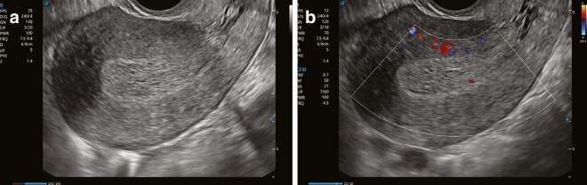
(5) 对生育和治疗原则的影响：
EH 患者常伴有明显受损的生育能力。
药物治疗是控制异常子宫出血和恢复子宫内膜的一线治疗方法。在子宫内膜癌风险较低的情况下，治疗目标是预防进展为癌症 [27]。对于有生育需求的患者，可在恢复子宫内膜后使用促排卵疗法以帮助受孕。
2. 子宫内膜息肉（EMPs）
(1) 临床概述：
子宫内膜息肉（EMPs）是异常子宫出血的常见病因。它们在育龄期女性中常见。大多数孤立性息肉位于子宫穹窿，而一些可能出现在输卵管口附近。多个息肉倾向于影响子宫的各个区域。
(2) 临床表现：
• 无症状病例很常见。
最常见的症状是异常子宫出血，包括以下几种：
月经量过多出血
月经周期延长
– 阴道异常出血（尤其绝经后）[28]
• 部分患者还可能出现不孕或流产。
(3) 超声特征：
(a) 单个息肉：
• 表现为与正常子宫内膜有清晰边界的泪滴状高回声肿块。
• 该肿块可能含有暗液区。
- 与子宫腔积液合并时，息肉更易于观察。
(5) Impact on fertility and treatment principles:
Patients with EH often experience significantly impaired fertility.
Pharmacological therapy is the first-line treatment to control abnormal uterine bleeding and restore the endometrium. In cases where endometrial cancer risk is low, treatment aims to prevent progression to cancer [27]. For patients with a desire for children, pro-ovulation therapy may be used after restoring the endometrium to help with conception.
2. Endometrial polyps (EMPs)
(1) Clinical overview:
Endometrial polyps (EMPs) are a common cause of abnormal uterine bleeding. They are frequently diagnosed in women of childbearing age. Most solitary polyps occur at the uterine fundus, while some may develop near the openings of the fallopian tubes. Multiple polyps tend to affect various areas of the uterus.
(2) Clinical manifestations:
• Asymptomatic cases are common.
The most frequent symptom is abnormal uterine bleeding, which may include the following:
Excessive menstrual blood flow
Prolonged menstrual periods
– Irregular vaginal bleeding (especially after menopause) [28]
• Some patients may also experience infertility or miscarriage.
(3) Ultrasonographic features:
(a) Single polyp:
• Appears as a teardrop-shaped hyperechoic mass with clear boundaries from the normal endometrium.
• The mass may contain a dark fluid area.
- When combined with intrauterine effusion, the polyp is more clearly visualized.
| 形态 | 子宫内膜与子宫肌层的边界 | 子宫内膜中线 | 超声回声 | 彩色多普勒超声发现 | |
| 卵巢囊肿 | 子宫内膜均匀增厚。 | 界限清楚的子宫内膜。 | 子宫内膜中线可能偏离或显示不佳。 | 超声回声可以是均匀的、非均匀的或蜂窝状的。 | 可见点状血流信号。 |
| 经阴道超声 | 在超声检查中，单个息肉呈泪滴状或团块状；多个息肉呈规则簇状。 | 单个息肉与周围正常的子宫内膜界限清楚；多个息肉与周围正常的子宫内膜界限不清。 | 子宫内膜中线可能偏离。 | 低回声，可能伴有暗液区。 | 息肉内单个主血管。 |
| 子粘膜肌瘤（FIGO 分类 I 型至 II 型） | 短或缺失的肿瘤蒂形成规则形状的肌瘤，而长蒂则使肌瘤呈不规则状或向宫颈管或阴道突出。 | 肿瘤蒂可在子宫肌层或子宫内膜处观察到。 | 子宫内膜中线可能偏离或显示不佳。 | 子宫平滑肌瘤小时呈均匀低回声；随着增大，可能变得不均匀回声并发生变性。 | 从子宫肌层和子宫内膜源出的血流条纹可以在肿瘤的蒂部观察到。 |
| 卵巢囊肿 | 子宫内膜弥漫性或局灶性增厚。 | 当癌变未侵犯子宫肌层时，子宫内膜-肌层交界处规则；当发生浸润时则不规则。 | 界限不清。 | 主要为低至中等回声的混合性、异质性回声。 | 卵巢周围和内部有丰富的点状、条纹状或簇状血流，呈低阻力动脉谱 |
| Morphology | Boundaries between endometrium and myometrium | Endometrial midline | Ultrasonic echogenicity | Color Doppler ultrasound findings | |
| EH | Homogeneous thickening of the endometrium. | Well-defined endometrium. | The endometrial midline may be deviated or poorly displayed. | The ultrasonic echoes can be homogeneous, heterogeneous, or honeycomb-like. | Punctate blood flow signals may be visualized. |
| EMP0 | On ultrasonography, a solitary polyp appears as a teardrop or clump; multiple polyps appear as regular clusters. | A single polyp is well-defined from the surrounding normal endometrium; multiple polyps are poorly defined from the normal endometrium surrounding them. | The endometrial midline may be deviated. | Hypoechoic, may be accompanied by dark fluid areas. | A single dominant vessel in the polyp. |
| Submucous fibroids (FIGO classification type 0 to type 2) | A short or absent tumor pedicle results in a regular-shaped fibroid, while a long pedicle causes the fibroid to appear irregular or protrude into the cervical canal or vagina. | The tumor pedicle can be observed in the myometrium or endometrium. | The endometrial midline may be deviated or poorly displayed. | Fibroids appear homogeneously hypoechoic when small; as they grow, they may become unevenly echogenic and undergo degeneration. | Stripes of blood flow originating from the myometrium and endometrium may be visualized at the tumor's pedicle. |
| EC | The endometrium is diffusely or focally thickened. | The endometrial-myometrial junction is regular when the cancer has not infiltrated the myometrium and irregularly and infiltration occurs. | Poorly defined. | Primarily mixed low-to-moderate echoes with heterogeneous echogenicity. | Abundant punctate, streaky, or clustered blood flow around and within the EC, with a low-resistance arterial spectrum |
(b) 多发息肉：
• 其特征是子宫内膜增厚且回声不均。
- 可能有不规则高回声团块，常与正常子宫内膜界限不清。
• 有些患者还伴有宫颈息肉。
- 可观察到子宫内膜移位，尤其是在大或多个息肉的情况下。
(c) 多普勒超声发现：
在彩色多普勒和频谱多普勒超声下，可以在息肉中观察到一个主要的血管，通常显示出“星状”模式。
高阻力动脉谱也可能检测到，此时阻力指数（RI）>0.50（见图7.23、7.24和7.25）。
(4)鉴别诊断：
有关鉴别诊断的完整列表，请参阅表7.4。
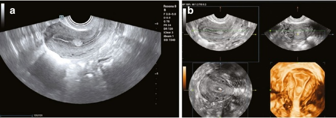
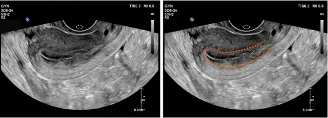
(b) Multiple polyps:
• Characterized by thickened and unevenly echogenic endometrium.
- There may be clusters of irregular hyperechoic patterns, often poorly demarcated from the normal endometrium.
• Some patients also present with cervical polyps.
- Shift of the uterine lining may be observed, particularly in large or multiple polyps.
(c) Doppler ultrasound findings:
Under color Doppler and spectral Doppler ultrasound, a single dominant vessel can be observed in the polyp, often displaying a “stellate” pattern.
A high-resistance arterial spectrum may also be detected with a resistance index (RI) >0.50 (see Figs. 7.23, 7.24, and 7.25).
(4) Differential diagnosis:
For a comprehensive list of differential diagnoses, refer to Table 7.4.
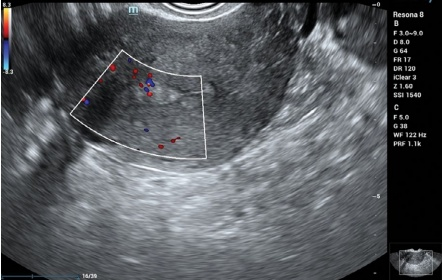
(5) 对生育和治疗原则的影响：
子宫内膜息肉可阻塞开口功能，阻碍精子迁移，并引起对着床或胚胎发育产生负面影响的生化效应 [29]。
治疗：
• 无症状、直径<1 cm的单个息肉可不予处理。
基底较宽的较大或多个息肉应行手术切除。
对于不孕患者，宫腔镜检查和息肉手术切除是安全且经济的 [30]。
3. 子宫内膜癌 (EC)
(1) 临床概述：
子宫内膜癌的临床分期遵循国际妇产科联合会 (FIGO) 标准 [31]。
(2) 临床表现：
月经异常和不规则阴道出血是许多患者的早期症状。有些患者还可能在性交时出现异常阴道分泌物和出血。在晚期，可能会出现贫血、体重减轻和恶病质等全身症状。
(3) 中晚期子宫内膜癌的超声特征：
(a) 子宫内膜改变：
子宫内膜弥漫性或局灶性增厚，回声不均（通常为低至中等混合回声）。
当癌性组织阻塞宫颈内口时，会发生子宫积液，表现为在原本无回声的子宫腔内可见微小的亮回声点。
(b) 子宫肌层改变：
癌性组织浸润到子宫肌层会导致子宫内膜-子宫肌层交界不清。
受累的子宫肌层可能表现为不均匀的低回声，与周围正常的子宫肌层界限不清。
(5) Impact on fertility and treatment principles:
Endometrial polyps can obstruct the ostium function, hinder sperm migration, and cause biochemical effects that negatively impact implantation or embryo development [29].
Treatment:
• Asymptomatic, single polyps that are <1 cm in diameter may be left untreated.
Larger or multiple polyps with wider bases should be treated with surgical resection.
For infertile patients, hysteroscopic examination and surgical removal of the polyps are safe and cost-effective [30].
3. Endometrial carcinoma (EC)
(1) Clinical overview:
The clinical staging of endometrial cancer follows the International Federation of Gynecology and Obstetrics (FIGO) criteria [31].
(2) Clinical manifestations:
Abnormal menstruation and irregular vaginal bleeding are the first signs in many patients. Some patients may also experience abnormal vaginal discharge and bleeding during sexual intercourse. In advanced stages, systemic symptoms, including anemia, weight loss, and cachexia, may develop.
(3) Ultrasonographic features of mid- to late-stage EC:
(a) Endometrial changes:
The endometrium appears diffusely or focally thickened, with uneven echogenicity (typically low-moderate mixed echogenicity).
When cancerous tissue blocks the cervical internal os, uterine effusion occurs, which may appear as tiny bright echo spots within an otherwise echo-less intrauterine area.
(b) Myometrial changes:
Infiltration of cancerous tissue into the myometrium results in an irregular endometrial–myometrial junction.
The affected myometrium may show uneven hypoechoicity and poor demarcation from the surrounding normal myometrium.
(c) 宫颈改变：
当宫颈受EC影响时，它会增厚，回声混杂，宫颈管结构难以显示。
(d) 盆腔侵犯：
在晚期肿瘤扩散到子宫外时，可能表现为
• 子宫旁肿块
• 腹水
• 淋巴结转移
• 远处转移的征象
(e) 多普勒超声检查所见：
- 可在输卵管的周围和内部检测到丰富的点状、条状或团块状血流。
也可见低阻力动脉血流。
- 当卵巢癌浸润子宫肌层时，可检测到受累子宫肌层内血流信号增高（见图 7.26、7.27 和 7.28）。
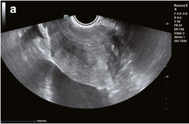
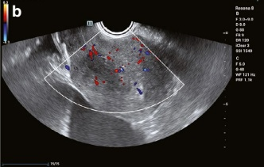
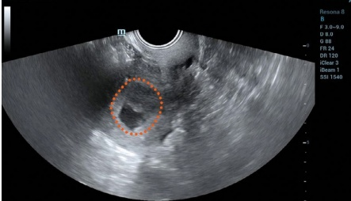
(c) Cervical changes:
When the cervix is affected by EC, it becomes thickened, with messy echogenicity and poor visualization of the cervical canal structures.
(d) Pelvic invasion:
As the tumor metastasizes outside the uterus in advanced stages, it may present as
• Para-uterine masses
• Ascites
• Lymph node metastasis
• Signs of distant metastasis
(e) Doppler ultrasound findings:
- Abundant point-like, strip-like, or mass-like blood flows may be detected in the periphery and interior of the EC.
Low-resistance arterial flow may also be seen.
- When EC infiltrates the myometrium, increased blood flow signals within the affected myometrium can be detected (see Figs. 7.26, 7.27, and 7.28).
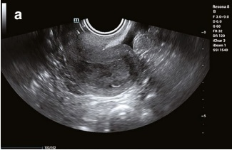
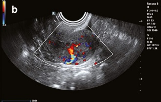
(4)鉴别诊断：
有关鉴别诊断的完整列表，请参阅表7.4。
(5) 对生育和治疗原则的影响：
保育力：
推荐对希望生育的年轻患者进行高剂量孕激素治疗，这些患者患有早期、分化良好的子宫内膜癌。
应每3个月进行病理活检以监测疾病进展。
如果疾病逆转，可继续治疗6-12个月，停药后需持续随访。
• 如果疾病进展或持续，应考虑子宫切除术。
- 病理结果证实完全缓解后，应尝试怀孕。
对于有风险因素的患者：有生育史或有风险因素（例如肥胖、多囊卵巢综合征（PCOS）、糖尿病或无排卵障碍）的女性建议尽快完成生育，可借助IVF-ET [32]。
4. 宫腔粘连（IUA）
(1) 临床概述：
宫腔粘连（IUA），也称为阿舍曼综合征，是一种由
- 由于子宫腔内机械操作或感染导致子宫内膜基底层受损的病理状况。
子宫内膜修复不良会导致粘连区，从而减小宫腔容积。
在严重情况下，宫腔可能部分或完全闭锁，显著减小其功能容积 [33]。
(4) Differential diagnosis:
For a comprehensive list of differential diagnoses, refer to Table 7.4.
(5) Impact on fertility and treatment principles:
Fertility preservation:
High-dose progesterone treatment is recommended for young patients with early-stage, well-differentiated EC who wish to bear children.
Pathological biopsy should be performed every 3 months to monitor disease progression.
If disease reversal occurs, treatment can continue for 6–12 months, with continuous follow-up after discontinuation.
• If the disease progresses or persists, a hysterectomy should be considered.
- Once pathological results confirm complete remission, trying to conceive should be initiated.
For patients with risk factors: Women with a history of infertility or risk factors (e.g., obesity, polycystic ovary syndrome (PCOS), diabetes mellitus, or anovulatory disorders) are advised to complete childbearing as soon as possible, with the aid of IVF-ET [32].
4. Intrauterine adhesions (IUA)
(1) Clinical overview:
Intrauterine adhesions (IUA), also known as Asherman syndrome, is a pathological condition resulting from
- Damage to the basal layer of the endometrium due to intrauterine mechanical manipulation or infection.
Poor endometrial repair leads to adhesion zones that reduce the uterine cavity volume.
In severe cases, the uterine cavity may become partially or completely obliterated, significantly reducing its functional volume [33].
(2) 临床表现：
常见症状包括以下几项：
经量过少或闭经
• 盆腔疼痛
• 不孕症
• 复发性自然流产
(3) 超声特征：
在中国临床实践中，IUA根据超声发现可分为四种类型：
(a) 一型（轻度粘连）：
子宫内膜清晰显示，但部分不连续。
在不连续处可见不规则的低回声带，并与子宫肌层相连，影响宫腔长径 $\leq$ 1/2（见图7.29）。
(b) II型（中度粘连）：
- 子宫腔轻度分离，内部直径 $\leq$ 1 cm。
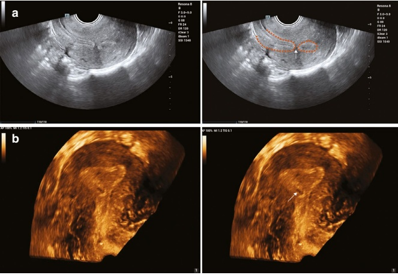
(2) Clinical manifestations:
Common symptoms include the following:
Hypomenorrhea or amenorrhea
• Pelvic pain
• Infertility
• Recurrent spontaneous abortion
(3) Ultrasonographic features:
In clinical practice in China, IUA is classified into four types based on ultra-sound findings:
(a) Type I (mild adhesion):
The endometrium is clearly displayed but partly discontinuous.
Irregular hypoechoic bands can be visualized at discontinuities and are connected to the myometrium, affecting $ \leq $1/2 of the uterine cavity's longitudinal diameter (see Fig. 7.29).
(b) Type II (moderate adhesion):
- Mild separation of the uterine cavity, with an internal diameter of $ \leq $1 cm.
- 可见连接子宫前壁和后壁的轻度回声带（见图 7.30）。
(c) III型（严重粘连）：
- 子宫内膜薄（<0.2 cm），显示不良，内膜-肌层交界处不规则。
• 可见多个不规则的低回声区。
- 粘连影响宫腔纵径的 $>1/2$（见图7.31）。
(d) IV型（完全粘连）：
- 由于宫颈内口完全粘连，宫腔内严重分离，内部直径 $>1 \text{ cm}$。
• 宫腔积血（见图 7.32）。
3D 超声表现：
冠状切面可能显示子宫韧带（JZ）受损：
- 轻度损伤时：低回声晕呈边界不清、排列不规则。
• 重度损伤时：子宫结合带（JZ）完全消失。
(4)鉴别诊断：
IUA应与先天性子宫异常鉴别，例如：
• 单角子宫
• 子宫间隔
关键的鉴别特征包括以下几点：
患有先天性异常的患者月经血流呈正常或轻度增多。
子宫内膜形状可能异常，但通常厚度正常。
• 内膜-肌层交界处保持规则。
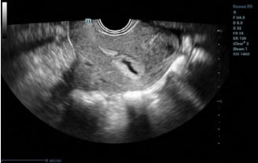
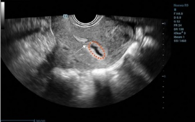
- A slightly echogenic band connecting the anterior and posterior walls of the uterus can be visualized (see Fig. 7.30).
(c) Type III (severe adhesion):
- The endometrium is thin (<0.2 cm) and poorly displayed with an irregular endometrial–myometrial junction.
• Multiple irregular hypoechoic areas can be visualized.
- The adhesion affects $ >1/2 $ of the uterine cavity's longitudinal diameter (see Fig. 7.31).
(d) Type IV (complete adhesion):
- Severe separation within the uterine cavity with an internal diameter >1 cm due to complete adhesion at the internal cervical os.
• Blood accumulation in the uterine cavity (see Fig. 7.32).
3D ultrasound findings:
The coronal plane may show damage to the junctional zone:
- In mild injury: The hypoechoic halo appears poorly defined and irregularly arranged.
• In severe injury: The junctional zone disappears completely.
(4) Differential diagnosis:
IUA should be differentiated from congenital uterine abnormalities, such as:
• Unicornuate uterus
• Uterus septum
Key differentiating features include the following:
Patients with congenital abnormalities tend to have normal or slightly increased menstrual blood flow.
The endometrium may be abnormal in shape but usually has normal thickness.
• The endometrial–myometrial junction remains regular.
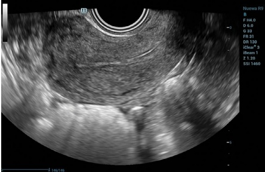
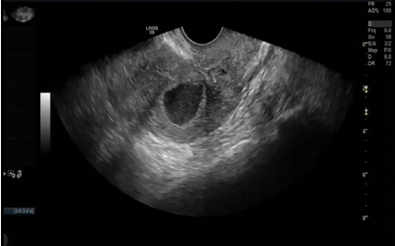
(5) 对生育和治疗原则的影响：
IUA 患者常出现不孕、受孕困难或反复流产。妊娠中期可发生血供不足或胎盘植入异常，从而导致前置胎盘和着床前置等并发症。
治疗策略：
• 手术恢复正常的宫腔解剖结构
• 预防再粘连
• 促进子宫内膜生长和改善其功能
- 全面术后评估以确保成功并减少复发
(5) Impact on fertility and treatment principles:
Patients with IUA often experience infertility, difficulty in conceiving, or recurrent miscarriages. In mid-pregnancy, inadequate blood supply or abnormal placental implantation can occur, leading to complications such as placenta praevia and placenta accreta.
Treatment strategy:
• Surgical restoration of normal uterine cavity anatomy
• Prevention of re-adhesions
• Promotion of endometrial growth and improvement of its function
- Comprehensive postoperative evaluation to ensure success and reduce recurrence